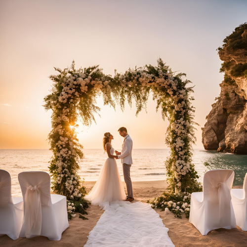

Services

Full-Service Planning
From start to finish, we handle every detail of your wedding.
Starting from CA$8000

Partial Planning
We assist with specific aspects of your wedding planning.
Starting from CA$5000
Day-of Coordination
We ensure your wedding day runs smoothly and stress-free.
Starting from CA$3000

Destination Wedding
Plan your dream wedding in a breathtaking location.
Starting from CA$10000

Decor Consultation
Create a stunning wedding theme with our expert designers.
Starting from CA$2000

Culture & Traditions
Incorporate your cultural heritage into your wedding.
Starting from CA$2500